Facilities
ORaCEL encompasses several shared laboratories for research activities in organic electronics spanning Physics, Chemistry, Mechanical Engineering, Electrical Engineering, and Materials Science and Engineering, with a wide variety of processing and characterization equipment.
Click Here to take a tour of our lab! →
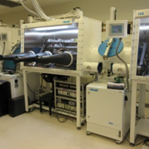
Glove Boxes (equipped with spin-coater and thermal vacuum evaporator) for fabrication and characterization of organic electronic devices
Organic Molecular Beam Deposition
Blade Coating Facility
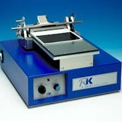
Wire Bar Coater
Asiga Max X 3D Printer
Dip Coater
Mini Slot Die Coater
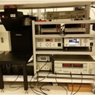
Photovoltaic Characterization Facility
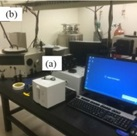
UV-Vis and Infrared Spectroscopy
Two-Photon Photoelectron (2PPE) Spectroscopy
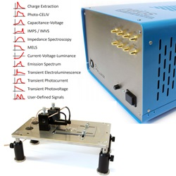
All-in-one OPV and OLED Measurements (PAIOS)
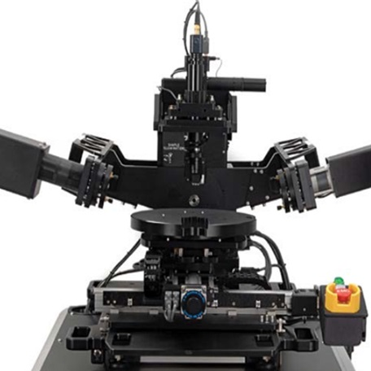
Variable Angle Spectroscopic Ellipsometer
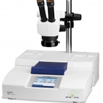
Flash DSC – Flash Differential Scanning Calorimeter
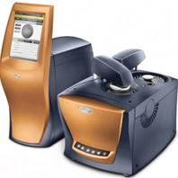
Discovery DSC from TA Instruments
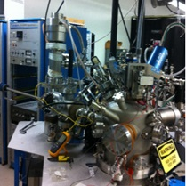
X-ray Photo-electron Spectroscopy (XPS)
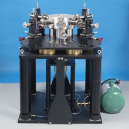
Janis Probe Station for Charge Transport Measurements
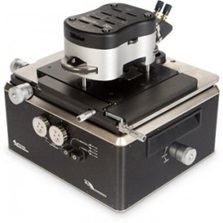
Atomic Force Microscopy
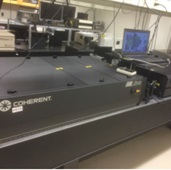
Ultrafast Spectroscopy : Transient Pump Probe Spectroscopy
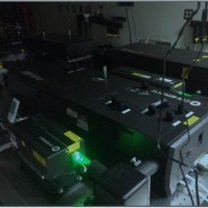
Ultrafast Spectroscopy : Time Resolved Second Harmonic Generation (TR-SHG) and Transient Pump probe Microscopy
3D Vector Superconducting Magnet and Optical System
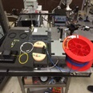
Home-built Sagnac Interferometer
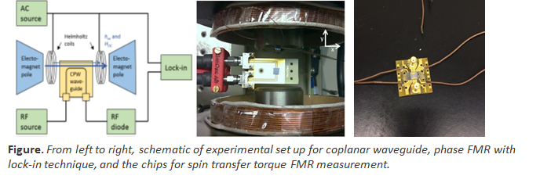